AXI Interrupt Controller 실습 목표
08장의 Timer Polling을 Interrupt 방식으로 바꾸어 Basys3의 LED0를 약 0.5초마다 반전합니다. AXI INTC(악시 인터럽트 컨트롤러, 인터럽트 요청 제어 장치)는 Timer의 요청을 받아 MicroBlaze V CPU에 전달합니다.
| Timer 인터럽트 처리 횟수 | 예상 LED0 출력 |
|---|---|
| 첫 번째 인터럽트 | LED0 ON |
| 두 번째 인터럽트 | LED0 OFF |
| 세 번째 인터럽트 | LED0 ON |
09장은 08장에 axi_intc_0를 추가하고, Timer의 만료를 CPU에 하드웨어 인터럽트로 알립니다. 실제 Vitis WATCH에서 interrupt_count 12 → 35, led_state 0 → 1을 확인했고 Basys3 LED0 점멸에 성공했습니다. 정확한 주기는 정밀 계측하지 않았습니다.
Polling과 Interrupt의 차이
08장의 Timer Polling과 09장의 Interrupt 방식이 CPU에 이벤트를 알리는 차이를 확인합니다.
| 항목 | 설명 |
|---|---|
| SoC 08 · Polling(폴링) | Main Loop에서 XTmrCtr_IsExpired()로 Timer 상태를 계속 읽음 |
| SoC 09 · Interrupt(인터럽트) | Timer 만료 → AXI INTC → CPU 예외 진입 → Handler에서 이벤트 기록 |
| LED를 제어하는 위치 | 08장과 마찬가지로 최종 LED0 기록은 Main Loop가 담당 |
09장 Main이 확인하는 timer_event는 RAM에 있는 소프트웨어 플래그입니다. AXI Timer의 하드웨어 만료 레지스터를 반복 읽는 Polling과 구분합니다.
AMD 원본 · AXI INTC 내부 블록도
핵심 부품은 Interrupt Detection(요청 감지), Registers(상태·허용), Interrupt Generation(출력 생성)입니다.
원본 그림의 Intr 입력으로 주변장치 인터럽트가 들어오고, Register Block에서 발생·허용·승인 상태를 관리합니다. AXI Interface는 CPU의 제어 레지스터 접근 통로입니다. 원본의 Irq는 일반 신호명이고, 이번 실제 Vivado IP의 출력 포트는 interrupt입니다.
AXI 제어 통신과 인터럽트 신호 경로
AXI4-Lite를 통해 레지스터를 읽고 쓰는 경로와 CPU에 알림을 보내는 선은 서로 다릅니다.
| 항목 | 설명 |
|---|---|
| CPU → INTC AXI 제어 | microblaze_riscv_0/M_AXI_DP → axi_smc → axi_intc_0/s_axi |
| Timer → INTC 입력 | axi_timer_0/interrupt → axi_intc_0/intr[0:0] |
| INTC → CPU 요청 | axi_intc_0/interrupt → microblaze_riscv_0/INTERRUPT |
| AXI INTC 시작 주소 | 0x41200000 · 실제 Address Editor 및 BSP 확인 |
하드웨어 블록의 실제 포트명은 업로드한 Vivado 2024.2 화면을 기준으로 합니다.
Timer T0INT와 Level 인터럽트
Timer 만료를 나타내는 상태 비트가 처리될 때까지 활성 상태일 수 있으므로 INTC 입력은 Level 감지가 적합합니다.
| 항목 | 설명 |
|---|---|
T0INT | Timer 0 인터럽트 상태 비트. 1을 써서 해제 |
ENIT0 | Timer 0 인터럽트 출력 허용 |
XTmrCtr_InterruptHandler() | Timer 인터럽트 상태 확인·처리를 담당하는 드라이버 Handler |
공식 기준: AMD PG079 · Timer Interrupts. Timer 내부 Counter 구조 원본은 08장 PG079 원본 그림을 참조합니다. 09장에서는 Timer 내부 설명을 반복하지 않습니다.
Level/High와 자동 설정 결과
Vivado의 CPU 출력과 INTC 주변장치 입력 설정을 구분해서 확인합니다.
| 항목 | 설명 |
|---|---|
| Processor Interrupt type | Level Interrupt |
| Processor Level type | Active High |
| Peripheral Interrupts Type | Vivado Basic 화면에서는 Auto |
XPAR_XINTC_0_KIND_OF_INTR | 실제 BSP에서 0x0 → Level 입력 |
NUM_INTR_INPUTS / IS_FAST | 0x1 / 0x0 → 입력 1개, Fast 모드 해제 |
AMD PG099 AMD PG099 v4.1 · 6~7쪽 Level/Edge 감지 설명에 따라 판정합니다. 입력은 Level인 반면 Timer 만료라는 사건은 주기적으로 반복됩니다.
AMD 원문 · AXI INTC Register Map
PG099 원본 Table 2-4를 사용하고, 실제 Base Address를 적용한 주소는 별도 표로 확인합니다.
AMD PG099 v4.1 · 15~16쪽 Table 2-4 Register Address Mapping · 레지스터별 비트 배치 그림은 원본 PDF 16~23쪽을 참조합니다.
| 항목 | 설명 |
|---|---|
+0x00 · ISR / 0x41200000 | Interrupt Status Register |
+0x04 · IPR / 0x41200004 | Interrupt Pending Register |
+0x08 · IER / 0x41200008 | Interrupt Enable Register |
+0x0C · IAR / 0x4120000C | Interrupt Acknowledge Register |
+0x10 · SIE / 0x41200010 | Set Interrupt Enables |
+0x14 · CIE / 0x41200014 | Clear Interrupt Enables |
+0x18 · IVR / 0x41200018 | Interrupt Vector Register |
+0x1C · MER / 0x4120001C | Master Enable Register |
오프셋은 공식 PG099, 실제 0x41200000 시작 주소는 09장 Vivado Address Editor에서 확인한 값입니다. 64 KiB 주소 할당 크기는 레지스터 자체의 크기를 뜻하지 않습니다.
ISR · IER · IPR · IAR · MER 관계
어떤 인터럽트가 발생했는지 확인하고, 전달을 허용하며, 처리 후 승인하는 역할을 각각 맡습니다.
| 항목 | 설명 |
|---|---|
ISR | 요청 발생 상태 기록 |
IER | Timer 입력의 인터럽트를 개별적으로 허용 |
IPR | 허용된 입력 중 대기 상태. 본 IP 설정에서는 활성화됨 |
MER | 전체 출력 허용 ME 및 하드웨어 인터럽트 입력 HIE 관리 |
IAR | 해당 인터럽트에 대한 처리 승인. Level 원인이 계속 활성화된 경우 다시 요청될 수 있음 |
원본 설명: AMD PG099 v4.1 · IER, AMD PG099 v4.1 · IAR, AMD PG099 v4.1 · MER. Timer 원인을 해제하는 일과 INTC 요청을 승인하는 일은 구별하며, 이번 코드는 드라이버 Handler에 맡깁니다.
Interrupt ID · 실제 xparameters.h
09장 하드웨어에 맞춰 생성된 BSP 값을 기준으로 인터럽트를 연결합니다.
// 실제 09장 Vitis BSP 정의
#define XPAR_FABRIC_XTMRCTR_0_INTR 0
#define XPAR_XTMRCTR_0_INTERRUPTS 0x2000
#define XPAR_XTMRCTR_0_INTERRUPT_PARENT 0x41200001
#define XPAR_XINTC_0_BASEADDR 0x412000000은 이번 INTC에 연결된 첫 번째 입력에 해당합니다. 0x2000을 '인터럽트 번호 8192'라고 해석하면 안 됩니다. 0x41200001은 드라이버에서 사용할 Interrupt Parent 인코딩값이며 단순 Base Address와 다릅니다.
CPU 예외 · INTC Driver · Timer Handler · Callback
CPU가 Interrupt를 받으면 등록된 드라이버 Handler를 통해 사용자 Callback으로 이어집니다.
| 항목 | 설명 |
|---|---|
| MicroBlaze V CPU Exception | 실행 중인 흐름을 보존한 뒤 등록된 인터럽트 Handler 진입 |
| AXI INTC Driver | 입력 0번에 대한 인터럽트 요청 확인·승인 |
XTmrCtr_InterruptHandler() | Timer 상태 처리 후 등록된 Callback 호출 |
TimerCallback() | interrupt_count++, timer_event = 1U |
| Main Loop | led_state ^= 1U → XGpio_DiscreteWrite() |
AMD embeddedsw 2024.2 Timer Interrupt 원본 C 예제를 근거로 합니다. 소프트웨어 흐름은 별도의 임의 그림으로 재작성하지 않습니다.
Classic 방식과 SDT 방식
09장 실제 Vitis Platform은 SDT 기반이므로 Classic Device ID 경로가 아니라 Timer 설정의 IntrId·IntrParent를 사용합니다.
| 항목 | 설명 |
|---|---|
| Classic(장치 ID 기반) | XIntc_Initialize → XIntc_Connect → XIntc_Start 및 CPU 예외 등록 |
| 이번 SDT(시스템 장치 트리 기반) | XTmrCtr_Initialize(&Timer, TIMER_BASEADDR) 후 XSetupInterruptSystem() 호출 |
| 실제 SDT 인자 | Timer.Config.IntrId와 Timer.Config.IntrParent 사용 |
이후 상세 코드 해설은 09.1장에서 다룹니다. 09장에는 실제 BSP에서 사용하는 경로만 중심으로 유지합니다.
ISR는 짧게 · LED0는 Main에서 제어
사용자 TimerCallback은 사건을 기록하는 데 집중하고, GPIO 출력은 Main Loop에서 수행합니다.
static void TimerCallback(void *CallBackRef, u8 TmrCtrNumber)
{
(void)CallBackRef;
(void)TmrCtrNumber;
interrupt_count++; // IRQ 발생 횟수 증가
timer_event = 1U; // Main에 이벤트 통지
}실제 WATCH 결과는 interrupt_count 12 → 35, led_state 0 → 1입니다. LED0 점멸을 실기 확인했습니다. 약 0.5초 반전 주기는 100 MHz·Timer Reset 설정에서 유도한 값으로, 정밀 계측값은 아닙니다.
08장 성공 프로젝트 열기
08장 성공 프로젝트를 직접 변경하지 않습니다.
- Open Project
/home/jung/soc/hw/soc08_axi_timer/soc08_axi_timer.xpr을 엽니다. - Block Design 확인기존 08장의 CPU, Local BRAM, AXI GPIO, AXI UART Lite, AXI Timer, SmartConnect를 확인합니다.
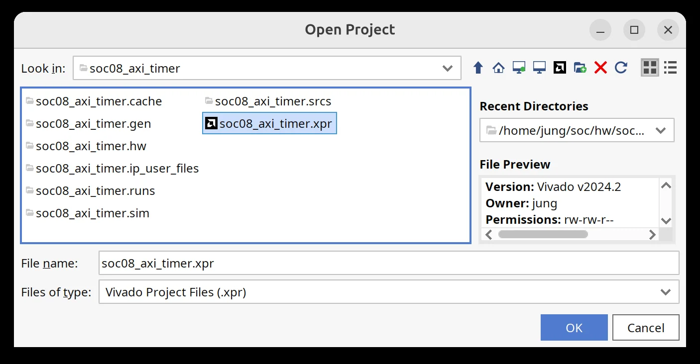
09장 프로젝트 Save As
08장 원본 프로젝트 경로는 유지합니다.
- File → Project → Save As프로젝트 이름
soc09_axi_interrupt, 위치/home/jung/soc/hw로 설정합니다. - Create project subdirectory선택 상태에서 생성 경로가
/home/jung/soc/hw/soc09_axi_interrupt인지 확인합니다.
soc09_axi_interrupt, 경로 /home/jung/soc/hw/soc09_axi_interrupt가 실제 Save As 창과 일치합니다.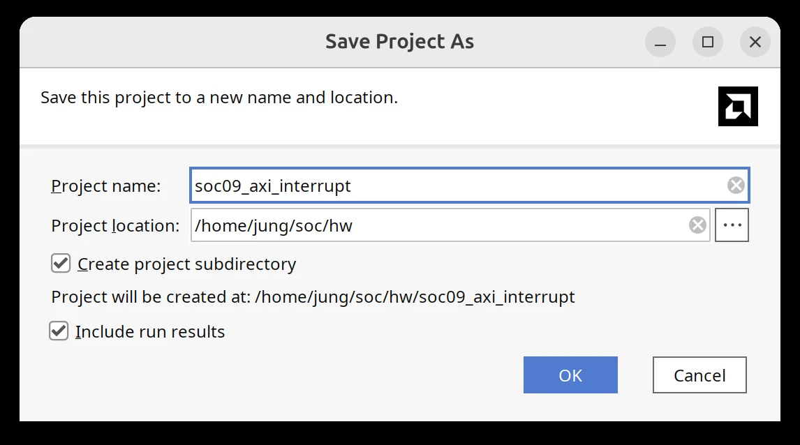
Block Design 독립 저장
새 Block Design 파일은 09장 프로젝트 내부에 있어야 합니다.
- Save Block Design As설계 이름을
soc09_axi_interrupt로 지정합니다. - Directory / Source set
Local to Project,Design Sources를 확인합니다.
soc09_axi_interrupt, Local to Project, Design Sources가 실제 Save Block Design As 창과 일치합니다.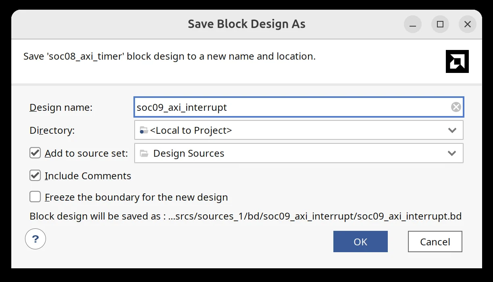
AXI Interrupt Controller IP 추가
Timer만 AXI INTC 입력으로 사용합니다.
- Add IPDiagram에서
AXI Interrupt Controller를 검색합니다. - 인스턴스 확인
axi_intc_0가 추가되고 기존 세 Peripheral은 유지되는지 확인합니다.
axi_intc_0가 실제 Block Design에 추가되었습니다.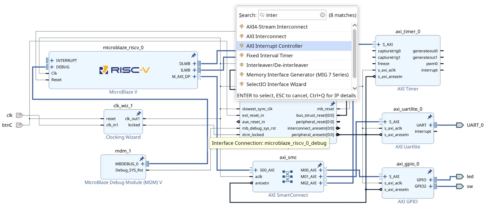
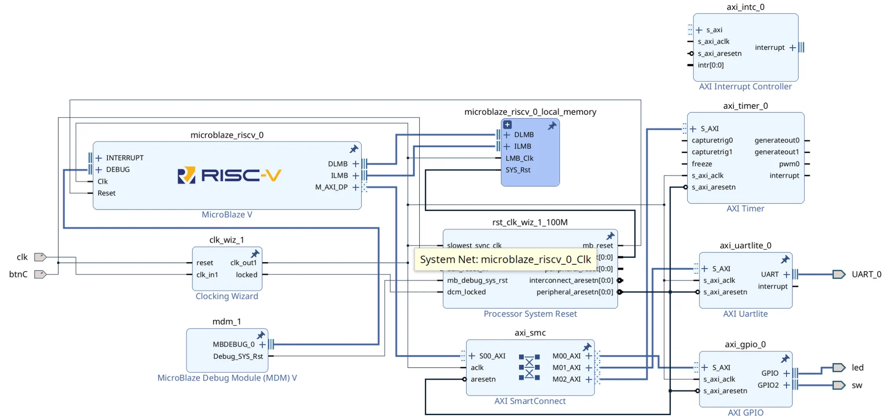
AXI INTC 설정
Peripheral Interrupts Type Auto는 배선 후 합성 해석과 연결을 대조합니다.
- BasicNumber of Peripheral Interrupts 1, Fast Interrupt Logic 해제, CPU Interrupt type Level Interrupt, Level type Active High를 확인합니다.
- AdvancedIER/Interrupt Pending 등 기본값 유지, Cascade 해제, Software Interrupt 0을 확인합니다.
- Clocks
s_axi_aclk,processor_clk가 100.0 MHz로 표시됩니다.
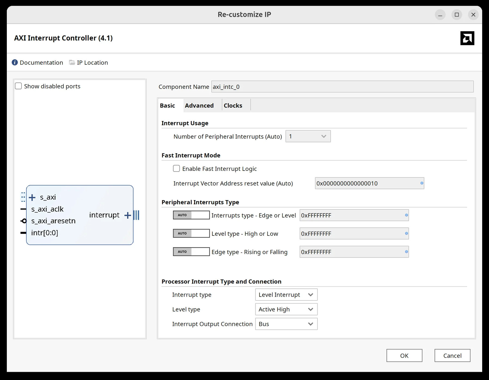
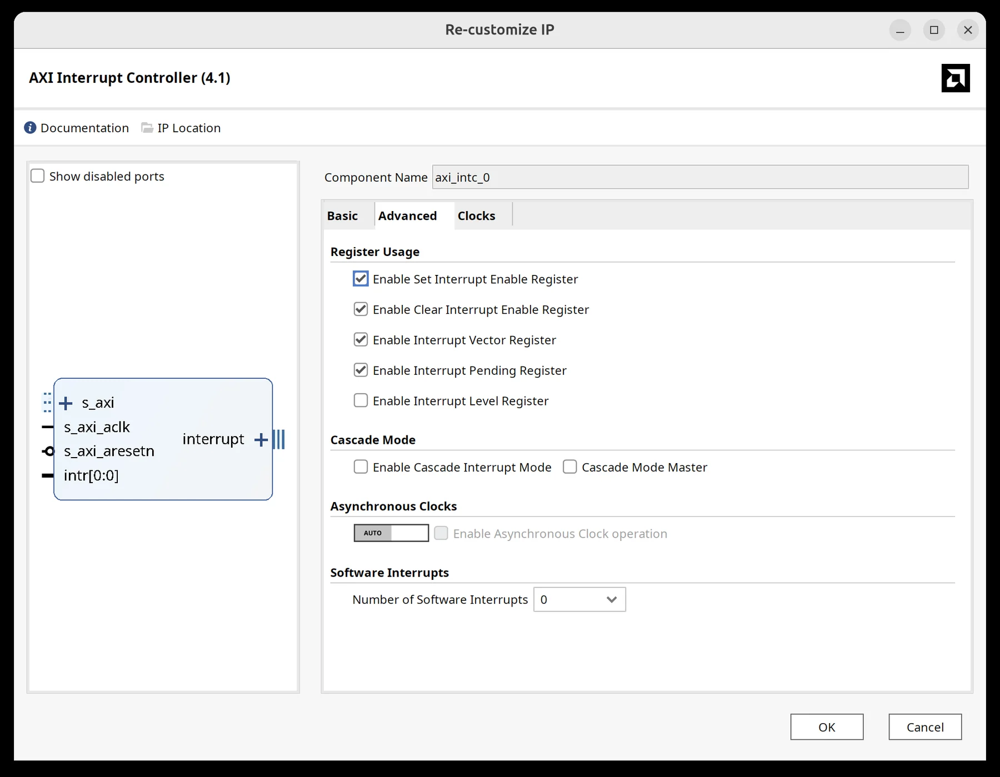
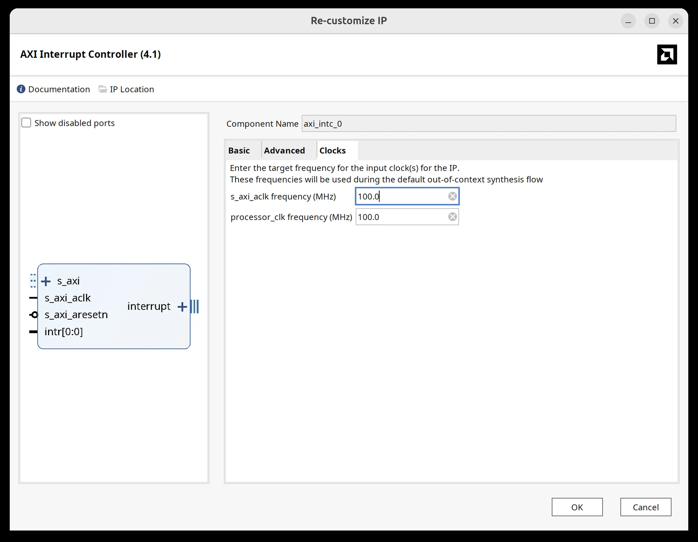
AXI Timer 인터럽트 연결
Timer 인터럽트 한 개만 연결합니다.
- Timer 출력 → INTC 입력
axi_timer_0/interrupt와axi_intc_0/intr[0:0]를 연결합니다.
axi_timer_0/interrupt → axi_intc_0/intr[0:0] 연결 화면을 확인했습니다.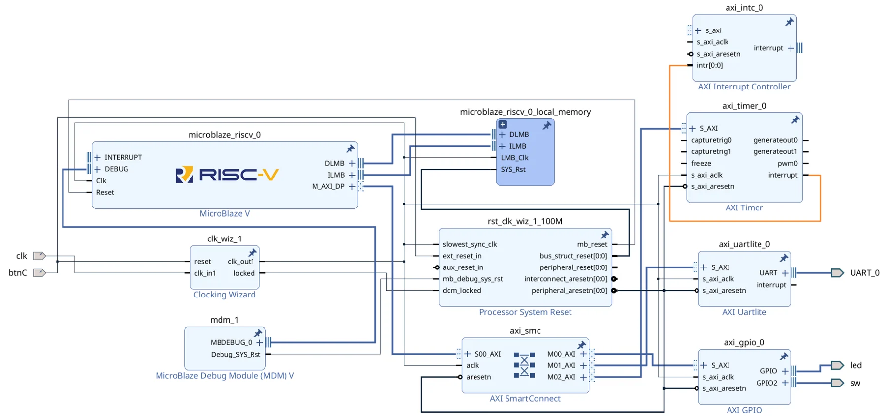
AXI INTC → MicroBlaze V 연결
실제 화면의 출력 이름은 interrupt입니다.
- INTC 출력 → CPU 입력
axi_intc_0/interrupt를microblaze_riscv_0/INTERRUPT와 연결합니다.
axi_intc_0/interrupt → microblaze_riscv_0/INTERRUPT 연결 화면을 확인했습니다.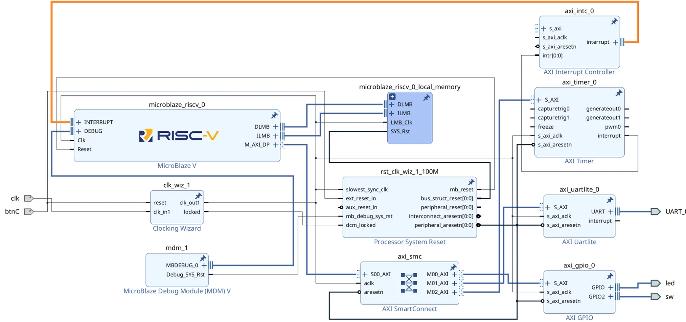
AXI · Clock · Reset 연결
기존 GPIO·UART Lite·Timer 인터페이스를 이동하지 않습니다.
- Run Connection Automation
axi_intc_0/s_axi를 선택하고 Mastermicroblaze_riscv_0 (Periph), Bridge IPaxi_smc를 확인합니다. - Clock / Reset 확인기존 100 MHz
clk_wiz_1/clk_out1,s_axi_aclk,s_axi_aresetn를 실제 배선과 대조합니다.
axi_smc, Clock Source가 100 MHz인 실제 설정을 확인했습니다.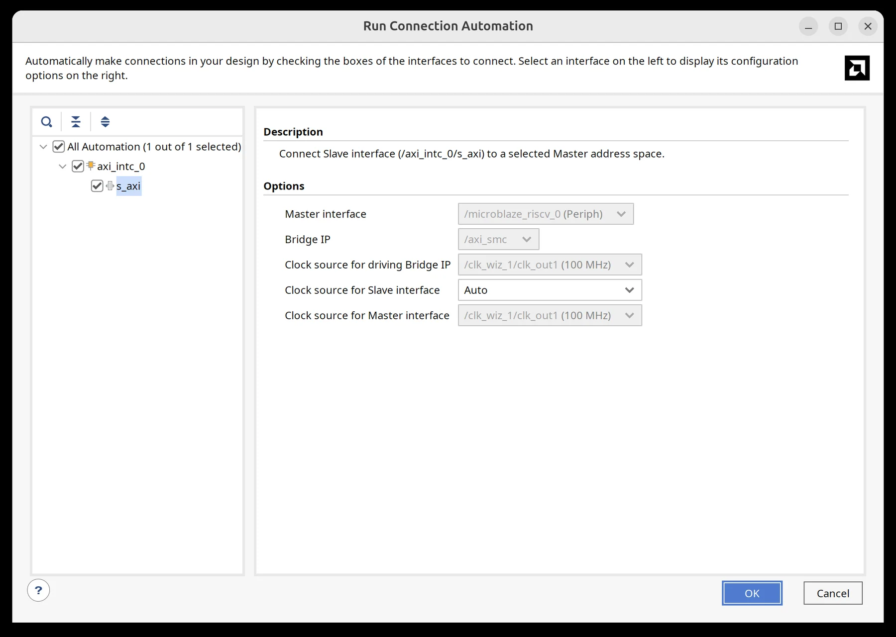
Address Editor
Assigned 6, Unassigned 0, Excluded 0입니다.
- Address Editor 열기AXI INTC
0x41200000/ 64 KiB를 확인합니다. - 기존 주소 유지GPIO
0x40000000, UART0x40600000, Timer0x41C00000, Local BRAM0x00000000/ 16 KiB를 대조합니다.
0x41200000, GPIO 0x40000000, UART 0x40600000, Timer 0x41C00000, Local BRAM 16 KiB를 실제 Address Editor에서 확인했습니다.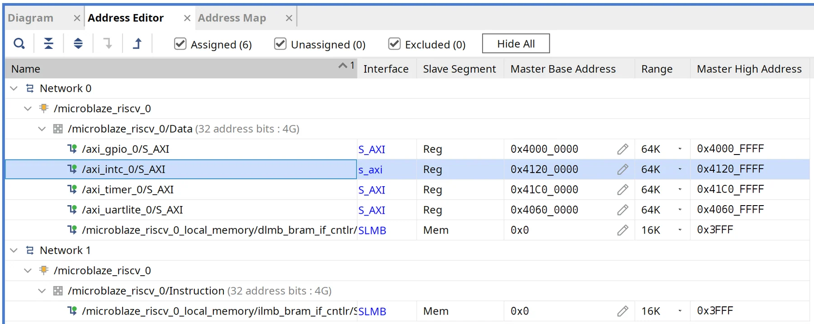
Validate Design
실제 성공 메시지를 확보했습니다.
- Validate Design(F6)Block Design에서 실행합니다.
- 결과 확인오류 또는 Critical Warning이 없는지 확인합니다.
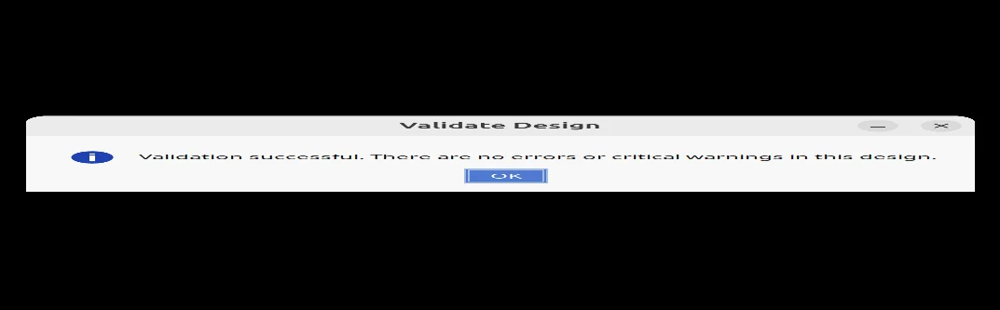
HDL Wrapper · Top · XDC
초기에는 08장 Wrapper가 남아 있었으나 이후 09장 Wrapper가 최종 Top으로 표시됐습니다.
- Create HDL Wrapper
soc09_axi_interrupt.bd에서 Let Vivado manage wrapper and auto-update를 선택합니다. - Top 확인Sources의 최상위가
soc09_axi_interrupt_wrapper.v인지 확인합니다. - XDC 확인08장에서 검증한 기존 XDC의 포트명
clk,btnC,sw,led, UART 인터페이스가 새 Wrapper에 일치하는지 확인합니다.
soc09_axi_interrupt_wrapper.v가 최종 Top으로 생성된 화면을 확인했습니다. XDC의 개별 핀·제약 내용은 이 화면에서 확인되지 않았습니다.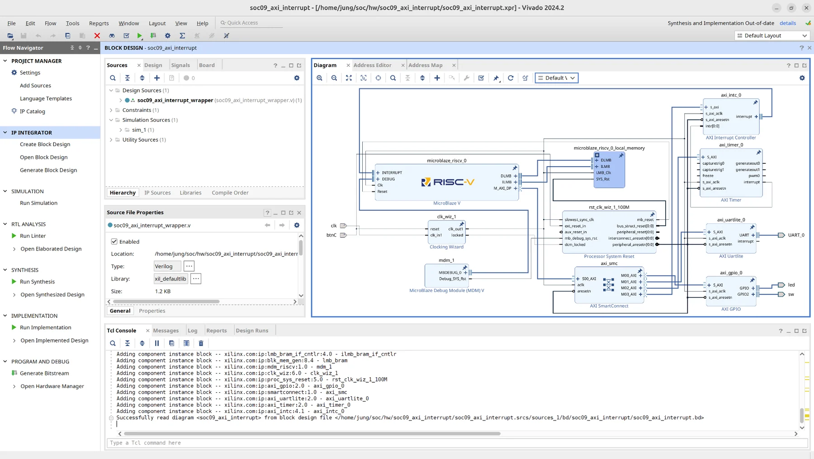
Generate Bitstream · Timing · Power
Generate Bitstream 후 실제 Timing Summary와 Power Summary를 확인합니다. Power 결과는 보드의 전력 실측이 아닙니다.
- Generate BitstreamImplementation 및 write_bitstream을 완료합니다.
- Design Timing SummaryWNS와 WHS 등 타이밍 여유가 양수이고 failing endpoint가 0인지 확인합니다.
- Power Summary예상 소비전력과 Confidence level을 구분하여 기록합니다.
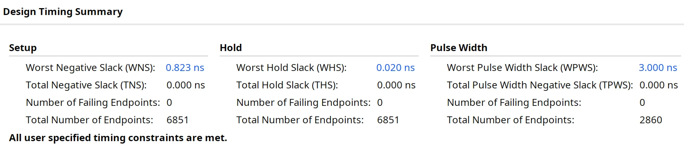
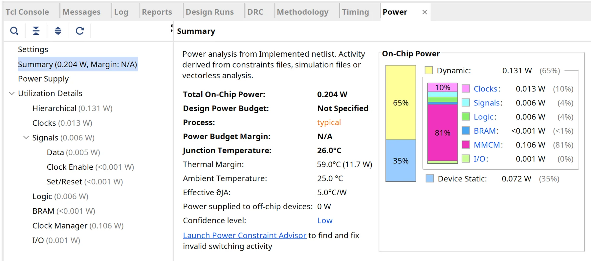
Export Hardware (XSA)
Vitis에서 실제 09장 XSA를 선택합니다.
- File → Export → Export HardwareInclude bitstream을 선택합니다.
- XSA 이름과 경로
soc09_axi_interrupt.xsa,/home/jung/soc/hw/soc09_axi_interrupt를 지정합니다.
soc09_axi_interrupt.xsa 저장 경로를 확인했고, Vivado 단계 완료를 보고받았습니다.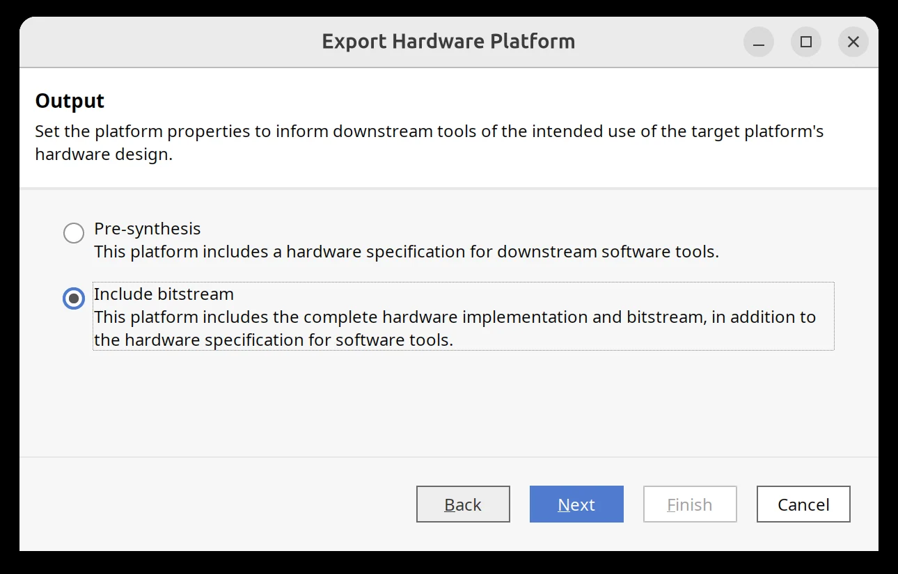
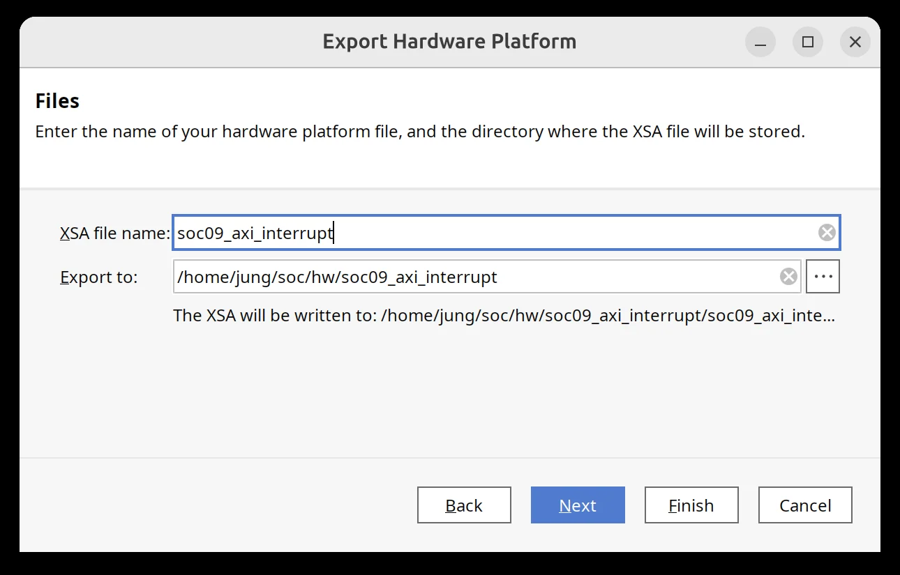
Vitis Platform 생성
09장 XSA를 사용한 독립 Platform을 생성하고 standalone MicroBlaze V Domain을 설정합니다.
- New Component → Platform이름
soc09_axi_interrupt_platform, Workspace/home/jung/soc/sw를 지정합니다. - FlowHardware Design으로 09장 XSA를 지정합니다.
- OS and Processor
standalone,microblaze_riscv_0를 선택합니다. - Summary / Finish최종 경로가
/home/jung/soc/sw/soc09_axi_interrupt_platform인지 확인한 뒤 Finish로 생성합니다.
soc09_axi_interrupt_platform, XSA, standalone, CPU microblaze_riscv_0, 최종 Summary 경로를 확인했습니다.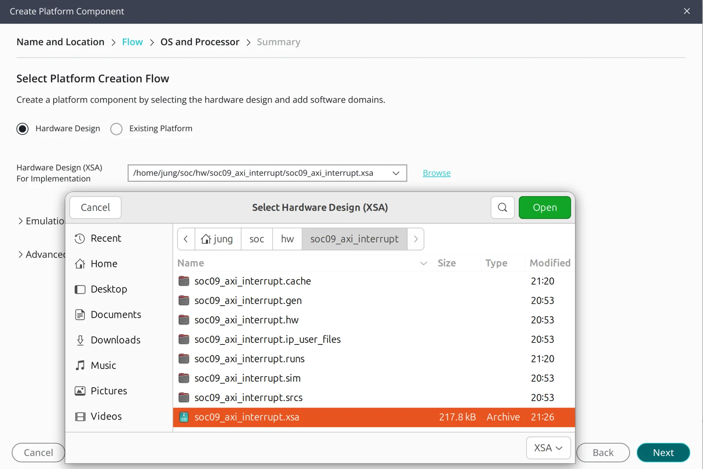
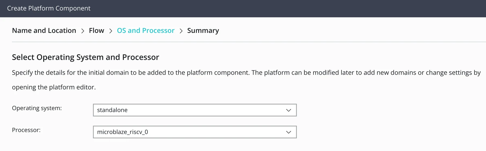
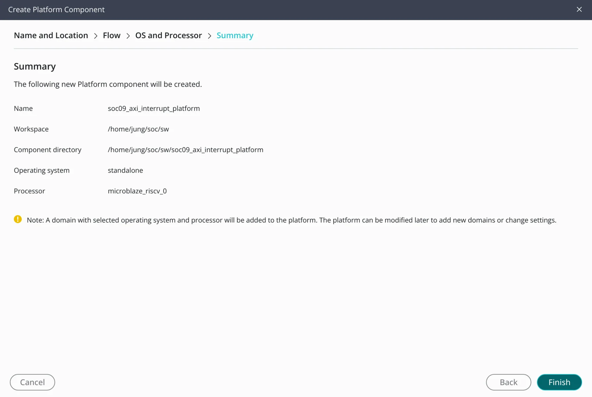
Vitis Platform Build
Vitis Platform의 BSP에서 실제 장치 주소·인터럽트 정의가 생성됐는지 확인합니다.
- Platform Component생성된 Platform Editor와
standalone_microblaze_riscv_0Domain을 확인합니다. - BuildPlatform Component Build를 실행하고 로그를 확인합니다.
standalone_microblaze_riscv_0/bsp/include/xparameters.h에서 GPIO, UART Lite, Timer, INTC의 주소·인터럽트 정의가 생성된 것을 확인했습니다. 09장 Application의 빌드·실행도 성공했습니다.| BSP 정의 | 실제 확인값 |
|---|---|
| AXI INTC | XPAR_XINTC_0_BASEADDR · 0x41200000, Level 감지, 입력 1개 |
| AXI Timer | XPAR_XTMRCTR_0_BASEADDR · 0x41C00000, 100 MHz |
| Timer IRQ | XPAR_FABRIC_XTMRCTR_0_INTR · 0, INTERRUPT_PARENT · 0x41200001 |
| AXI GPIO | XPAR_XGPIO_0_BASEADDR · 0x40000000 |
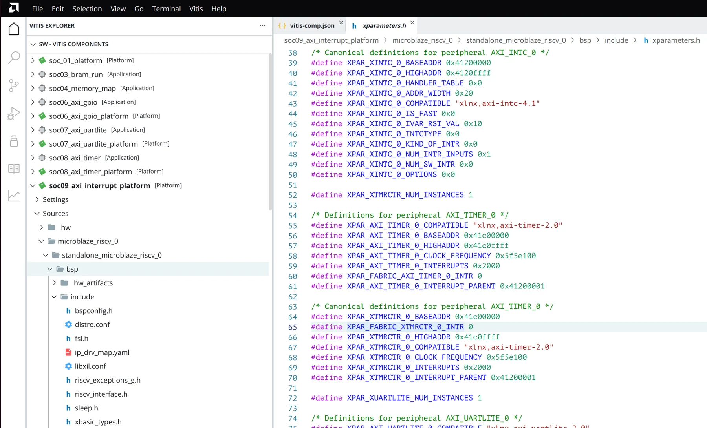
09장 Application 생성
Empty Application을 새로 만들어 08장 프로젝트와 독립된 09장 실행 프로그램을 준비합니다.
- New Component → Application별도 Application 이름을
soc09_axi_interrupt로 지정합니다. - Platform / Domain09장 Platform과 standalone Domain을 선택합니다.
soc09_axi_interrupt Application 생성 완료. Platform soc09_axi_interrupt_platform, Domain standalone_microblaze_riscv_0, 경로 /home/jung/soc/sw/soc09_axi_interrupt가 실제 Summary 화면과 일치합니다.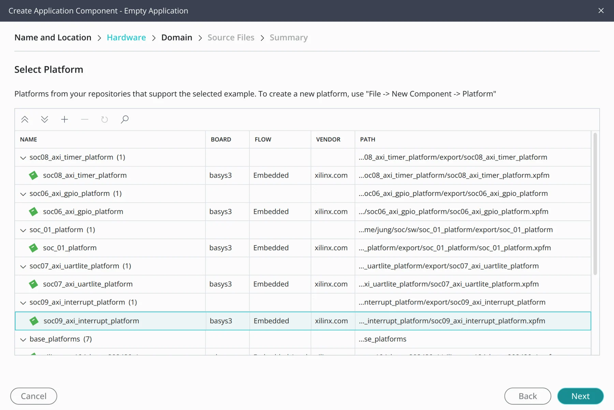
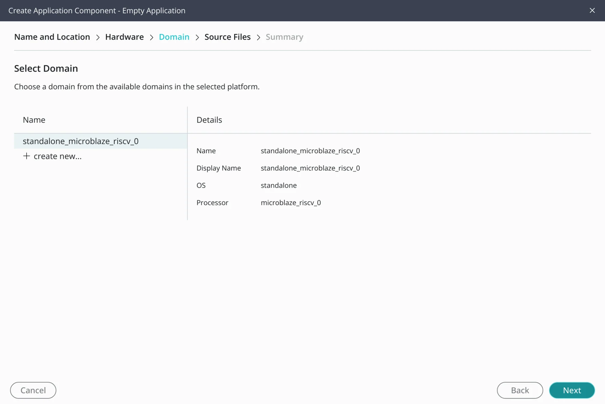
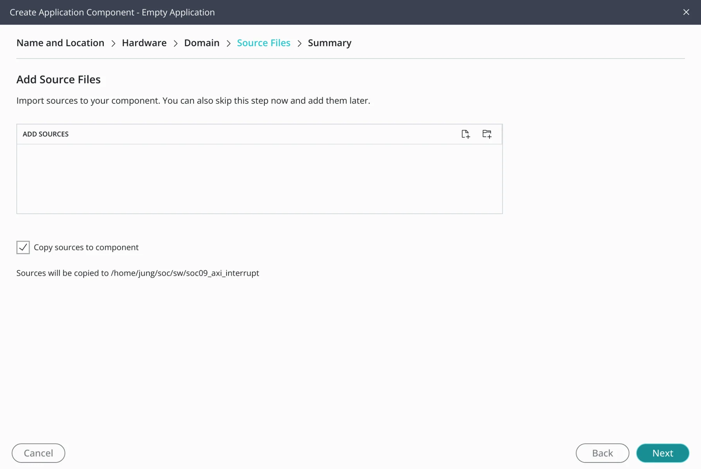
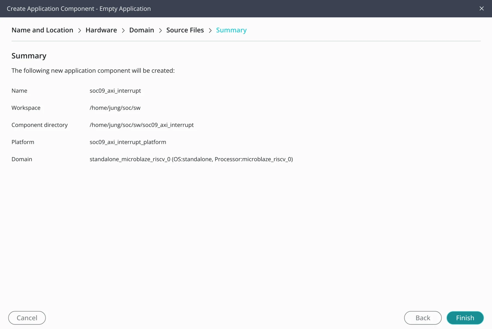
Interrupt main.c 적용
09장 BSP의 SDT 방식에 맞는 인터럽트 처리 코드를 입력합니다. 실제 Vitis Build와 FPGA Debug에서 동작을 확인했습니다.
- BSP 매크로 확인생성된
xparameters.h에서 GPIO·Timer·INTC 장치 ID, 실제 Interrupt ID 및 SDT 설정을 확인합니다. - main.c 입력아래 전체 교육용 예제 또는 09.1장 코드를 적용하고 중복 main()을 제거합니다.
src/main.c 작성 후 soc09_axi_interrupt.elf 컴파일 성공. SDT 경로의 XTmrCtr_Initialize(&Timer, TIMER_BASEADDR), XSetupInterruptSystem(... Timer.Config.IntrId, Timer.Config.IntrParent ...) 사용을 확인했습니다.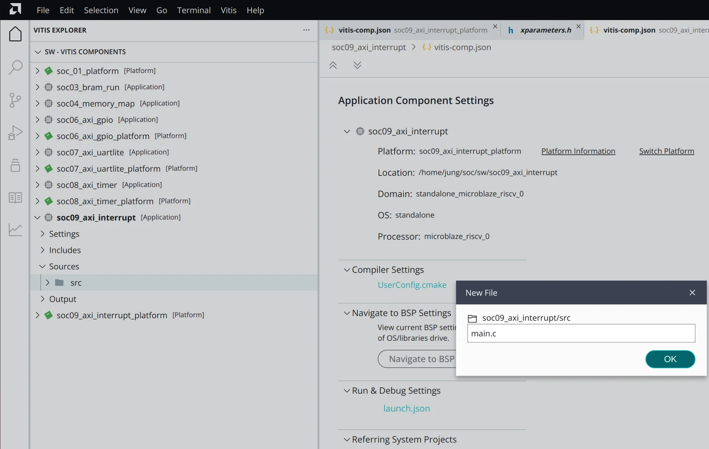
Build · Program · Debug
09장 Application의 Build와 Baremetal Debug(베어메탈 디버그)를 실행합니다.
- Build
soc09_axi_interrupt.elf생성을 확인합니다. - FPGA Program / Debug09장 Bitstream과 ELF를 사용합니다. Debug에 진입할 때 실제 확인된
launch.json탭 열기 절차를 참고합니다.
Build Finished successfully, soc09_axi_interrupt.elf 생성 및 FPGA Debug 진입 성공. launch.json에서 09장 Bitstream, MicroBlaze V CPU, ELF를 선택한 화면을 확인했습니다.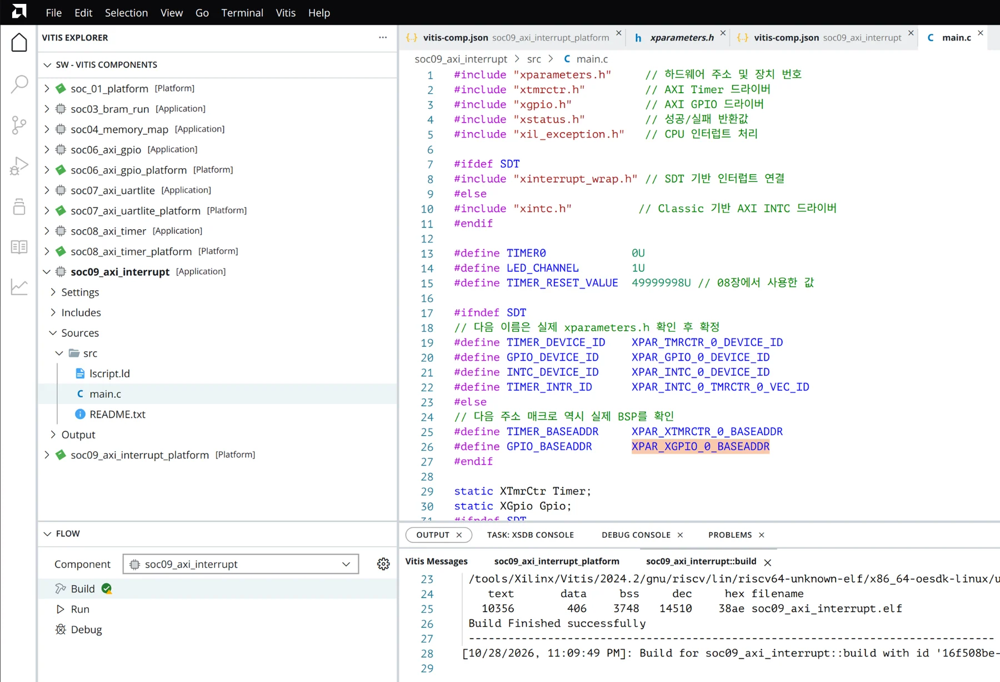
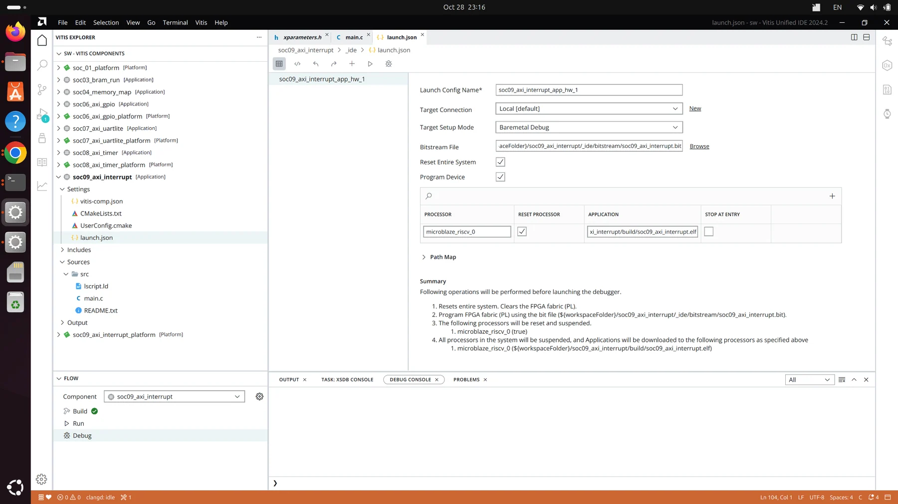
Timer Interrupt 동작 검증
실제 Basys3 보드에서 LED0가 정상적으로 깜빡였고, Vitis WATCH에서 인터럽트 증가 및 LED 상태 변화가 확인됐습니다.
- Watch
interrupt_count,timer_event,led_state를 관찰합니다. - LED0Timer 설정상 약 0.5초마다 LED0 토글이 예상됩니다. ISR Handler의 진입·복귀도 확인합니다.
interrupt_count가 12회 → 35회로 증가했고, led_state가 0 → 1로 바뀌었습니다.| Watch 변수 | 첫 번째 정지 화면 | 두 번째 정지 화면 | 관찰 결과 |
|---|---|---|---|
interrupt_count | 0x0000000C (12) | 0x00000023 (35) | 23회 증가 |
timer_event | 0x00000000 | 0x00000000 | ISR에서 1로 설정된 뒤 Main에서 0으로 지울 수 있음 |
led_state | 0x00000000 | 0x00000001 | LED0 OFF → ON |
AXI Timer → AXI INTC → MicroBlaze V → Timer 드라이버 Handler → TimerCallback() → Main Loop → AXI GPIO → LED0
Timer 입력 100 MHz, Reset Value 49,999,998 설정상 약 0.5초마다 LED0가 반전합니다. 실제 점멸은 보드에서 확인했으며, 정확한 주기 계측은 수행하지 않았습니다.
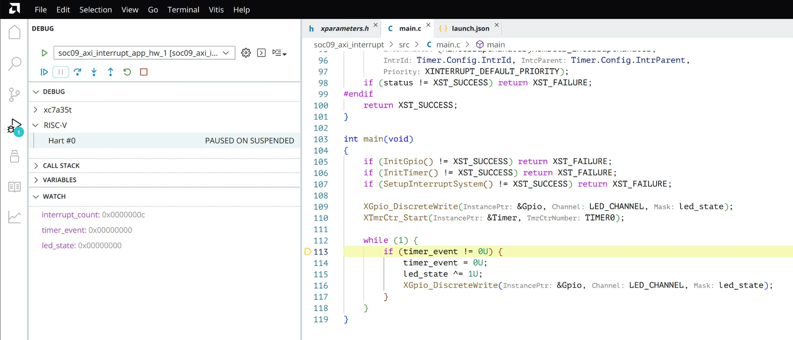
Timer Interrupt main.c — 전체 코드
09장 Application에서 사용할 코드이며 상세 설명은 09.1장에 정리했습니다.
09장 Application의 Build 성공과 실제 Debug 동작을 확인했습니다. 아래 코드는 검증한 인터럽트 처리 구조를 반영한 코드입니다. 실제 사용된 SDT 구성에서는 #ifdef SDT 쪽이 선택됩니다.
#include "xparameters.h" // 하드웨어 주소 및 장치 번호
#include "xtmrctr.h" // AXI Timer 드라이버
#include "xgpio.h" // AXI GPIO 드라이버
#include "xstatus.h" // 성공/실패 반환값
#include "xil_exception.h" // CPU 인터럽트 처리
#ifdef SDT
#include "xinterrupt_wrap.h" // SDT 기반 인터럽트 연결
#else
#include "xintc.h" // Classic 기반 AXI INTC 드라이버
#endif
#define TIMER0 0U
#define LED_CHANNEL 1U
#define TIMER_RESET_VALUE 49999998U // 08장에서 사용한 값
#ifndef SDT
// 다음 이름은 실제 xparameters.h 확인 후 확정
#define TIMER_DEVICE_ID XPAR_TMRCTR_0_DEVICE_ID
#define GPIO_DEVICE_ID XPAR_GPIO_0_DEVICE_ID
#define INTC_DEVICE_ID XPAR_INTC_0_DEVICE_ID
#define TIMER_INTR_ID XPAR_INTC_0_TMRCTR_0_VEC_ID
#else
// 다음 주소 매크로 역시 실제 BSP를 확인
#define TIMER_BASEADDR XPAR_XTMRCTR_0_BASEADDR
#define GPIO_BASEADDR XPAR_XGPIO_0_BASEADDR
#endif
static XTmrCtr Timer;
static XGpio Gpio;
#ifndef SDT
static XIntc Intc;
#endif
volatile u32 interrupt_count = 0U; // 발생한 인터럽트 횟수
volatile u32 timer_event = 0U; // Main에 전달할 이벤트
volatile u32 led_state = 0U; // LED0 상태
// Timer 드라이버에서 호출하는 사용자 Callback
static void TimerCallback(void *CallBackRef, u8 TmrCtrNumber)
{
(void)CallBackRef;
(void)TmrCtrNumber;
interrupt_count++;
timer_event = 1U;
}
static int InitGpio(void)
{
#ifndef SDT
return XGpio_Initialize(&Gpio, GPIO_DEVICE_ID);
#else
return XGpio_Initialize(&Gpio, GPIO_BASEADDR);
#endif
}
static int InitTimer(void)
{
int status;
#ifndef SDT
status = XTmrCtr_Initialize(&Timer, TIMER_DEVICE_ID);
#else
status = XTmrCtr_Initialize(&Timer, TIMER_BASEADDR);
#endif
if (status != XST_SUCCESS) return XST_FAILURE;
status = XTmrCtr_SelfTest(&Timer, TIMER0);
if (status != XST_SUCCESS) return XST_FAILURE;
XTmrCtr_SetHandler(&Timer, TimerCallback, &Timer);
XTmrCtr_SetOptions(&Timer, TIMER0,
XTC_DOWN_COUNT_OPTION | XTC_AUTO_RELOAD_OPTION | XTC_INT_MODE_OPTION);
XTmrCtr_SetResetValue(&Timer, TIMER0, TIMER_RESET_VALUE);
return XST_SUCCESS;
}
static int SetupInterruptSystem(void)
{
int status;
#ifndef SDT
status = XIntc_Initialize(&Intc, INTC_DEVICE_ID);
if (status != XST_SUCCESS) return XST_FAILURE;
status = XIntc_Connect(&Intc, TIMER_INTR_ID,
(XInterruptHandler)XTmrCtr_InterruptHandler, &Timer);
if (status != XST_SUCCESS) return XST_FAILURE;
status = XIntc_Start(&Intc, XIN_REAL_MODE);
if (status != XST_SUCCESS) return XST_FAILURE;
XIntc_Enable(&Intc, TIMER_INTR_ID);
Xil_ExceptionInit();
Xil_ExceptionRegisterHandler(XIL_EXCEPTION_ID_INT,
(Xil_ExceptionHandler)XIntc_InterruptHandler, &Intc);
Xil_ExceptionEnable();
#else
status = XSetupInterruptSystem(&Timer,
(XInterruptHandler)XTmrCtr_InterruptHandler,
Timer.Config.IntrId, Timer.Config.IntrParent,
XINTERRUPT_DEFAULT_PRIORITY);
if (status != XST_SUCCESS) return XST_FAILURE;
#endif
return XST_SUCCESS;
}
int main(void)
{
if (InitGpio() != XST_SUCCESS) return XST_FAILURE;
if (InitTimer() != XST_SUCCESS) return XST_FAILURE;
if (SetupInterruptSystem() != XST_SUCCESS) return XST_FAILURE;
XGpio_DiscreteWrite(&Gpio, LED_CHANNEL, led_state);
XTmrCtr_Start(&Timer, TIMER0);
while (1) {
if (timer_event != 0U) {
timer_event = 0U;
led_state ^= 1U;
XGpio_DiscreteWrite(&Gpio, LED_CHANNEL, led_state);
}
}
}
09장 진행 결과
Vivado 구성부터 Vitis ELF 빌드, Basys3 실제 LED0 점멸까지 확인했습니다. 실제 정밀 주기 측정 및 전력 측정은 별도입니다.
| 항목 | 확인 기준 또는 실제 값 |
|---|---|
| Vivado Block Design / AXI INTC | 실제 연결 및 Validate Design 성공 |
| AXI INTC Base | 0x41200000 / 64 KiB |
| Timing | WNS +0.823 ns, TNS 0, WHS +0.020 ns |
| Power | 0.204 W (분석 신뢰도 Low) |
| 09장 XSA | Include bitstream 내보내기 완료 보고 |
| Vitis 09장 Platform | Name / XSA / standalone / CPU / Summary 확인 |
| Vitis Platform / Application | 09장 BSP 생성·Application Build 성공, ELF 생성 확인 |
| 실제 Timer Interrupt / LED0 | WATCH 12 → 35회, led_state 0 → 1, 보드 LED0 점멸 실기 확인 |
AMD 문서 및 소스 근거
인터럽트 하드웨어와 드라이버 연결의 기준 문서입니다.
| 원본 | 대조 내용 |
|---|---|
| AMD PG099 · AXI Interrupt Controller | INTC 채널과 레지스터 |
| AMD PG079 · AXI Timer | Timer T0INT, Reload, Interrupt |
| AMD embeddedsw · XTmrCtr 예제 (2024.2) | Timer Handler 및 ISR 연결 |
| AMD UG1629 | MicroBlaze V Interrupt |
다음 장
← SoC 08 · AXI Timer · SoC 09.1 · C 코드 풀이 · 전체 목차 · SoC 10 →